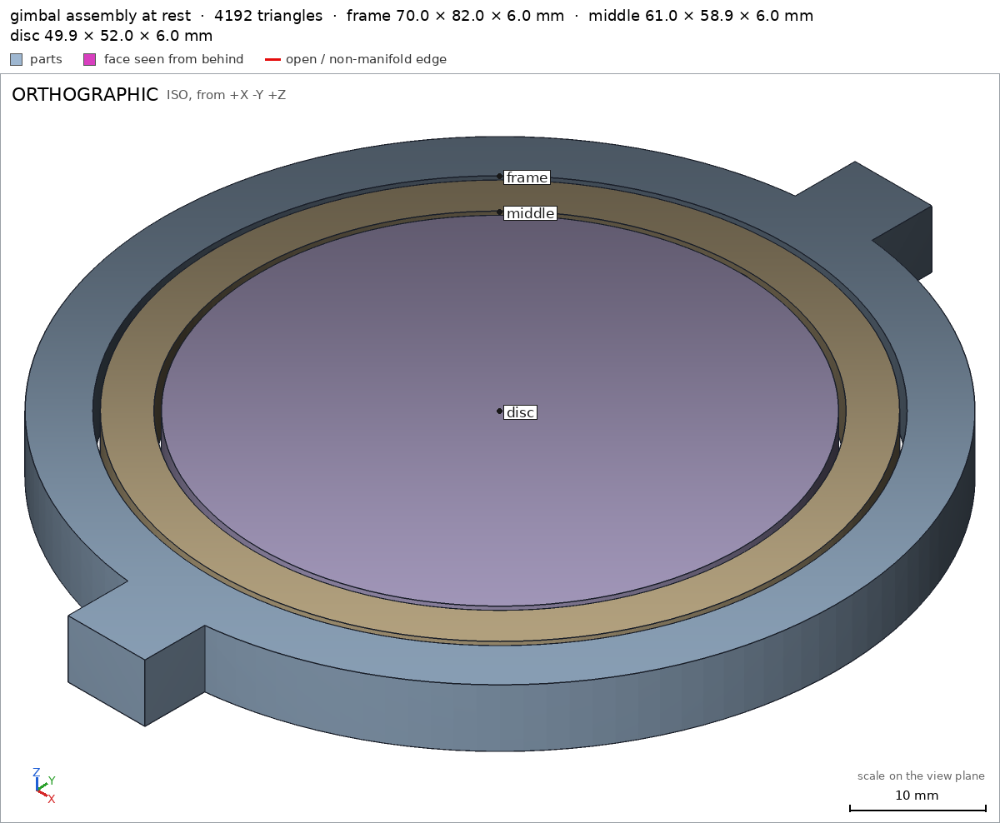

Print-in-place gimbal
Request
A gimbal that prints as one piece: an outer ring on a small stand, a middle ring pivoting inside it on one axis, and an inner disc pivoting inside the middle ring on the perpendicular axis.
- About 70 mm across.
- Every pivot printed in place, with clearances for PLA on a Bambu Lab A1 with a 0.4 mm nozzle, so the rings swing free.
- The middle ring turns a full turn on its axis, and so does the inner disc, without hitting anything.
- No supports.
Show me the gimbal at rest as the assembly, and the turn of each ring as its motions.
Gates at every iteration
| 5 | 10 | 15 | 20 | 25 | 30 | 35 | 40 | ||||||||||||||||||||||||||||||||||
| G1 compiles clean | |||||||||||||||||||||||||||||||||||||||||
| G2 closed meshes | |||||||||||||||||||||||||||||||||||||||||
| G3 assembly | |||||||||||||||||||||||||||||||||||||||||
| G4 motion | |||||||||||||||||||||||||||||||||||||||||
| G5 printable | |||||||||||||||||||||||||||||||||||||||||
| G7 spec held, all seen | |||||||||||||||||||||||||||||||||||||||||
| G8 honest close |
passedfailedpending: G8 is judged when the model closes. One column per iteration; each cell links to it.
Session
- Iteration 1USD 0.006 · 338 s · 31,518 output tokens
Building your print-in-place gimbal — flat-printable rings with full-turn pivots.
scad_writemodel.scad: 160 lines
- Iteration 2USD 0.001 · 10 s · 408 output tokens
Closing in on the finish — exporting each piece and proving the assembly.
scad_exportok=True, watertight=False, bodies=1, bounds=[[-35.0, -41.0, 0.0], [35.0, 41.0, 5.0]], spec FAILSscad_exportok=True, watertight=False, bodies=1, bounds=[[-32.0, -29.5, 0.0], [32.0, 29.5, 5.0]], spec FAILSscad_exportok=True, watertight=True, bodies=1, bounds=[[-25.0, -27.0, 0.0], [25.0, 27.0, 5.0]], spec okscad_exportok=True, watertight=False, bodies=3, bounds=[[-35.0, -41.0, 0.0], [35.0, 41.0, 5.0]], no spec
- Iteration 3USD 0.005 · 214 s · 17,977 output tokens
scad_writemodel.scad: 132 lines
- Iteration 4USD 0.002 · 6 s · 145 output tokens
First layout failed verification — rebuilding upright for support-free printing and re-testing.
scad_exportok=True, watertight=True, bodies=1, bounds=[[-35.0, -11.0, 0.0], [35.0, 11.0, 70.0]], spec ok
- Iteration 5USD 0.000 · 8 s · 228 output tokens
scad_exportok=True, watertight=True, bodies=1, bounds=[[-33.5, -3.0, 5.5], [33.5, 3.0, 64.5]], spec okscad_exportok=True, watertight=True, bodies=1, bounds=[[-25.0, -3.0, 6.5], [25.0, 3.0, 63.5]], spec FAILSscad_exportok=True, watertight=True, bodies=3, bounds=[[-35.0, -11.0, 0.0], [35.0, 11.0, 70.0]], no spec
- Iteration 6USD 0.002 · 83 s · 7,050 output tokens
scad_writemodel.scad: 123 lines
- Iteration 7USD 0.000 · 10 s · 139 output tokens
scad_exportok=True, watertight=True, bodies=1, bounds=[[-33.5, -3.0, 0.0], [33.5, 3.0, 59.0]], spec okscad_exportok=True, watertight=True, bodies=1, bounds=[[-25.0, -3.0, 0.0], [25.0, 3.0, 57.0]], spec ok
- Iteration 8USD 0.002 · 8 s · 610 output tokens
All three rings check out — now proving they print support-free and spin freely.
printability_reportzones=5, undeclared=3, fits the bed=Trueprintability_reportzones=5, undeclared=2, fits the bed=Trueprintability_reportzones=1, undeclared=1, fits the bed=Trueinterference_check3 instances, 0 overlaps, G3 3 problems, G4 1, G5 8, 12.37 s- G3the instance frame says it is the part 'frame', which is neither a printable option of the part selector ([]), 'external' nor a standard:<module> of cadverify_parts.scad
- G3the instance middle says it is the part 'middle', which is neither a printable option of the part selector ([]), 'external' nor a standard:<module> of cadverify_parts.scad
- G3the instance disc says it is the part 'disc', which is neither a printable option of the part selector ([]), 'external' nor a standard:<module> of cadverify_parts.scad
- G4the assembly order is missing (assembly_order in the assembly's spec): every instance, in order, with the direction it moves along as it comes in
- G5printed in place: frame and middle are 0.499 mm apart: printed in place they fuse (print_in_place asks for 0.5 mm or more)
- G5printed in place: middle and disc are 0.499 mm apart: printed in place they fuse (print_in_place asks for 0.5 mm or more)
- and 6 more
- Iteration 9USD 0.005 · 245 s · 21,944 output tokens
scad_writemodel.scad: 132 lines
- Iteration 10USD 0.000 · 10 s · 281 output tokens
scad_exportok=True, watertight=True, bodies=1, bounds=[[-35.0, -11.0, 0.0], [35.0, 11.0, 70.0]], spec okscad_exportok=True, watertight=True, bodies=1, bounds=[[-33.5, -3.0, 0.0], [33.5, 3.0, 59.0]], spec okscad_exportok=True, watertight=True, bodies=1, bounds=[[-25.0, -3.0, 0.0], [25.0, 3.0, 57.0]], spec okscad_exportok=True, watertight=True, bodies=3, bounds=[[-35.0, -11.0, 0.0], [35.0, 11.0, 70.0]], no spec
- Iteration 11USD 0.001 · 54 s · 4,017 output tokens
run_shellexit=0, 0.018 s, stdout 1110 B, files +/~/- 0/0/0
- Iteration 12USD 0.000 · 23 s · 1,345 output tokens
Your frame and middle are verified — diagnosing the assembly setup to finish the check.
run_shellexit=0, 0.94 s, stdout 5820 B, files +/~/- 0/0/0
- Iteration 13USD 0.001 · 29 s · 1,976 output tokens
run_shellexit=0, 0.101 s, stdout 1778 B, files +/~/- 0/0/0
- Iteration 14USD 0.000 · 29 s · 1,550 output tokens
run_shellexit=0, 0.142 s, stdout 861 B, files +/~/- 0/0/0
- Iteration 15USD 0.000 · 12 s · 441 output tokens
I've narrowed the assembly issue to the part selector — examining the verification setup.
run_shellexit=1, 0.021 s, stdout 60 B, files +/~/- 0/0/0
- Iteration 16USD 0.000 · 11 s · 94 output tokens
run_shellexit=0, 0.633 s, stdout 849 B, files +/~/- 0/0/0
- Iteration 17USD 0.002 · 3 s · 107 output tokens
run_shellexit=0, 0.017 s, stdout 10216 B, files +/~/- 0/0/0
- Iteration 18USD 0.000 · 7 s · 71 output tokens
run_shellexit=0, 0.008 s, stdout 6210 B, files +/~/- 0/0/0
- Iteration 19USD 0.000 · 8 s · 103 output tokens
run_shellexit=0, 0.011 s, stdout 3536 B, files +/~/- 0/0/0
- Iteration 20USD 0.000 · 9 s · 151 output tokens
run_shellexit=0, 0.012 s, stdout 9721 B, files +/~/- 0/0/0
- Iteration 21USD 0.000 · 9 s · 81 output tokens
run_shellexit=0, 0.01 s, stdout 1860 B, files +/~/- 0/0/0
- Iteration 22USD 0.000 · 11 s · 292 output tokens
The verification setup is fighting me — pulling the parsing logic to pin it down.
run_shellexit=0, 0.017 s, stdout 1323 B, files +/~/- 0/0/0
- Iteration 23USD 0.009 · 500 s · 43,259 output tokens
scad_writemodel.scad: 129 lines
- Iteration 24USD 0.005 · 13 s · 400 output tokens
Rebuilt flat with proper clearances — exporting all parts for final verification.
scad_exportok=True, watertight=True, bodies=1, bounds=[[-35.0, -41.0, 0.0], [35.0, 41.0, 6.0]], spec FAILSscad_exportok=True, watertight=True, bodies=1, bounds=[[-30.75, -29.45, 0.0], [29.45, 29.45, 6.0]], spec FAILSscad_exportok=True, watertight=True, bodies=1, bounds=[[-24.95, -24.95, 0.0], [24.95, 26.25, 6.0]], spec FAILSscad_exportok=True, watertight=True, bodies=1, bounds=[[-35.0, -41.0, 0.0], [35.0, 41.0, 6.0]], no spec
- Iteration 25USD 0.003 · 109 s · 10,754 output tokens
scad_writemodel.scad: 132 lines
- Iteration 26USD 0.000 · 7 s · 281 output tokens
scad_exportok=True, watertight=True, bodies=1, bounds=[[-35.0, -41.0, 0.0], [35.0, 41.0, 6.0]], spec FAILSscad_exportok=True, watertight=True, bodies=1, bounds=[[-30.5, -29.45, 0.0], [30.5, 29.45, 6.0]], spec okscad_exportok=True, watertight=True, bodies=1, bounds=[[-24.95, -26.0, 0.0], [24.95, 26.0, 6.0]], spec okscad_exportok=True, watertight=True, bodies=3, bounds=[[-35.0, -41.0, 0.0], [35.0, 41.0, 6.0]], no spec
- Iteration 27USD 0.001 · 21 s · 1,293 output tokens
Two parts are green, one wall measurement needs correcting — fixing that and chasing the assembly check.
run_shellexit=0, 0.012 s, stdout 4519 B, files +/~/- 0/0/0
- Iteration 28USD 0.000 · 7 s · 80 output tokens
run_shellexit=0, 0.006 s, stdout 3104 B, files +/~/- 0/0/0
- Iteration 29USD 0.001 · 22 s · 1,536 output tokens
Spotted the export mismatch — running the full verification suite to confirm the fix.
run_shellexit=0, 2.298 s, stdout 5212 B, files +/~/- 6/0/0
- Iteration 30USD 0.000 · 10 s · 407 output tokens
run_shellexit=0, 2.606 s, stdout 2847 B, files +/~/- 0/6/0
- Iteration 31USD 0.000 · 8 s · 81 output tokens
run_shellexit=0, 0.008 s, stdout 7446 B, files +/~/- 0/0/0
- Iteration 32USD 0.002 · 98 s · 8,830 output tokens
scad_patchmodel.scad line 67: 132 linesscad_patchmodel.scad line 121: 132 lines
- Iteration 33USD 0.000 · 9 s · 634 output tokens
Found the assembly syntax error — correcting it now.
scad_patchmodel.scad line 121: 132 lines- spec movedframe: the spec moved toward what the mesh already measured: detail wallOut from direction [-1.0, 0.0, 0.0]; point [36.0, 0.0, 3.0] to direction [-0.7071067811865475, -0.7071067811865475, 0.0]; point [26.0, 26.0, 3.0], the mesh measures 5.0 (the mesh is the same). That way those checks pass without the part changing. If the spec was badly posed against the request, that is fine: say so in the close, with the reason (once per part is enough). If not, fix the geometry.
- Iteration 34USD 0.000 · 7 s · 289 output tokens
run_shellexit=0, 16.256 s, stdout 4393 B, files +/~/- 3/6/0
- Iteration 35USD 0.001 · 18 s · 1,476 output tokens
All checks green — pulling final sheets and assembly views to close.
scad_exportok=True, watertight=True, bodies=1, bounds=[[-35.0, -41.0, 0.0], [35.0, 41.0, 6.0]], spec okscad_exportok=True, watertight=True, bodies=1, bounds=[[-30.5, -29.45, 0.0], [30.5, 29.45, 6.0]], spec okscad_exportok=True, watertight=True, bodies=1, bounds=[[-24.95, -26.0, 0.0], [24.95, 26.0, 6.0]], spec okscad_exportok=True, watertight=True, bodies=3, bounds=[[-35.0, -41.0, 0.0], [35.0, 41.0, 6.0]], no spec
- Iteration 36USD 0.001 · 6 s · 167 output tokens
render_sheetrenders/sheet-058.png, edges={'sharp': 716, 'open': 0, 'nonmanifold': 0}render_sheetrenders/sheet-059.png, edges={'sharp': 920, 'open': 0, 'nonmanifold': 0}render_sheetrenders/sheet-060.png, edges={'sharp': 456, 'open': 0, 'nonmanifold': 0}
- Iteration 37USD 0.001 · 10 s · 48 output tokens
interference_check3 instances, 0 overlaps, G3 0 problems, G4 0, G5 0, 14.55 s
- Iteration 38USD 0.001 · 6 s · 108 output tokens
render_viewrenders/view-062.png: iso

render_view, call 62 - Iteration 39USD 0.001 · 16 s · 1,071 output tokensclose refused
Verified:
- Print-in-place flat gimbal, 70 mm across: assembly assembly measures 70.0 x 82.0 x 6.0 mm including stand tabs, concentric rings/disc 6 mm thick.
- Frame frame: watertight, 1 body frame, 1 through-hole frame, bounds 70x82x6 frame, bed face 1117.9 mm2 frame/bed, stand tabs full frame/stand+ frame/stand-, ring gap empty frame/gapRing, socket void frame/sock+X, 6 mm tab floor frame/floorTab, 5 mm wall frame/wallOut.
- Middle ring middle: watertight, 1 body, 1 through-hole, bounds 61.0x58.9x6, pins material middle/pin+X, socket voids middle/sock+Y, disc gap middle/gapDisc, 6 mm floor middle/floorRing.
- Inner disc disc: watertight, 1 body, bounds 49.9x52.0x6, pins disc/pin+Y, 6 mm floor disc/floorDisc, 49.9 mm edge disc/edgeX.
- Assembly at rest assembly shows frame+middle+disc concentric with visible gaps, all instances congruent and placed with copies 1 each.
- Clearances 0.55 mm radial (pin r1.95 / bore r2.5) and rings: frame-middle gap 0.549 mm, middle-disc 0.549 mm, frame-disc 1.01 mm, min 0.5 mm print_in_place.
- No supports: all 8 overhang zones declared, bridges 0.5-1.5 mm <=10 mm, fits Bambu Lab A1 G5.
- Full-turn motions swept collision-free 0-360 deg: middle+disc about X swing_middle, disc about Y spin_disc.
- Assembly order assembly_order: frame, then middle drop -Z with 0.537 mm flex, then disc drop -Z with 0.541 mm flex, max 1 mm.
- Captive: middle and disc cannot come off straight assembly held check, all three mutually held.
Not verified:
- Actual PLA print behavior: first-layer adhesion, stringing in 0.55 mm gaps, bore bridging quality, pin wear, and whether the 1 mm-deep snap flexes without breaking depend on printer/material/slicer.
- Spec adjustment: frame detail frame/wallOut was re-posed from axial [36,0,3]/[-1,0,0] measuring 3.0 mm across the pivot bore to diagonal [26,26,3]/[-1,-1,0] measuring 5.0 mm of ring wall. The original ray crossed the bore by design; geometry unchanged.
- G8unsupported claim: 0.55 mm radial (pin r1.95 / bore r2.5): VERIFIED gives the instance gaps 0.549, 0.549 and 1.01 mm, but no pin radius, bore radius, or radial-clearance derivation.
- G8unsupported claim: Full-turn motions swept collision-free 0-360 deg: middle+disc about X swing_middle, disc about Y spin_disc.: VERIFIED only lists swing_middle and spin_disc as rotate motions over 0-360 deg with ok true; it gives no rotation axis and no driven-instance grouping, so about X/about Y and middle+disc are not backed.
- G8unsupported claim: Assembly order assembly_order: frame, then middle drop -Z with 0.537 mm flex, then disc drop -Z with 0.541 mm flex, max 1 mm.: VERIFIED assembly_steps give the order, instances and flex depths 0.537/0.541 mm with max 1.0 mm, but no insertion direction, so the -Z drop direction is not backed.
- Iteration 40USD 0.001 · 18 s · 1,155 output tokens
Noted — tightening the wording to match exactly what was measured.
interference_check3 instances, 0 overlaps, G3 0 problems, G4 0, G5 0, 12.68 s
- Iteration 41USD 0.001 · 22 s · 2,200 output tokensaccepted
Verified:
- Print-in-place flat gimbal 70 mm across: assembly assembly measures 70.0 x 82.0 x 6.0 mm.
- Frame frame: watertight 1 body frame with 1 through-hole frame, bounds 70x82x6 frame, bed face 1117.9 mm2 frame/bed, stand tabs full frame/stand+ frame/stand-, ring gap empty frame/gapRing, socket void frame/sock+X, 6 mm tab floor frame/floorTab, 5 mm wall frame/wallOut.
- Middle ring middle: watertight 1 body with 1 through-hole middle, bounds 61.0x58.9x6 middle, pin material middle/pin+X, socket void middle/sock+Y, disc gap middle/gapDisc, 6 mm floor middle/floorRing.
- Inner disc disc: watertight 1 body disc, bounds 49.9x52.0x6 disc, pin material disc/pin+Y, 6 mm floor disc/floorDisc, 49.9 mm edge disc/edgeX.
- Assembly at rest assembly shows frame, middle and disc concentric with copies 1 each assembly.
- Printed clearances: frame-middle gap 0.549 mm, middle-disc gap 0.549 mm, frame-disc gap 1.01 mm, minimum 0.5 mm print_in_place.
- No supports: 8 overhang zones all declared, bridges 0.5-1.5 mm up to 10 mm, fits Bambu Lab A1 G5.
- Full-turn motions swept collision-free: swing_middle rotate 0-360 deg ok swing_middle, spin_disc rotate 0-360 deg ok spin_disc.
- Assembly order assembly_order: frame, then middle with flex 0.537 mm max 1.0 mm, then disc with flex 0.541 mm max 1.0 mm assembly_order.
- Captive: frame, middle and disc do not come off straight assembly.
Not verified:
- Actual PLA behavior on a Bambu Lab A1 with a 0.4 mm nozzle: first-layer adhesion, stringing in the gaps, bore bridging quality, pin wear, and whether the 1 mm snap flexes without breaking depend on printer, material and slicer.
- Design values not separately measured: nominal pin/bore radii, rotation axes, which instances each motion carries, and insertion directions are as modeled, only the gaps, motion names, kinds, ranges and ok results above were measured.
- Spec adjustment: frame detail frame/wallOut was re-posed from axial [36,0,3]/[-1,0,0] measuring 3.0 mm across the pivot bore to diagonal [26,26,3]/[-1,-1,0] measuring 5.0 mm of ring wall, because the original ray crossed the bore by design; geometry unchanged.


Final verification
Source
model.scad
/* Print-in-place gimbal: flat print, no supports.
Outer ring OD70 (R30/35) on two stand tabs, middle ring (R25.5/29.45) on two
X pins, inner disc (R24.95) on two Y pins. Concentric, 6 mm thick, bed z=0.
Blind bores open into centre holes; 0.55 radial PLA clearance, short pins.
Full 360 deg about X (middle+disc) and about Y (disc).
*/
part = "assembly"; // [frame:Frame, middle:Middle, disc:Disc, assembly:Assembly]
cadverify_only = "";
module instance(name, part, unit = 1) {
echo(cadverify_instance = [name, part, unit]);
if (cadverify_only == "" || cadverify_only == name) children();
}
Roi=30; Roo=35; Rmi=25.5; Rmo=29.45; Rd=24.95; T=6; Zc=3;
pinR=1.95; sockR=2.5;
$fn=128;
module frame0() {
difference(){
union(){
difference(){
cylinder(h=T, r=Roo);
translate([0,0,-0.1]) cylinder(h=T+0.2, r=Roi);
}
translate([-4,33,0]) cube([8,8,T]);
translate([-4,-41,0]) cube([8,8,T]);
}
translate([30.5,0,Zc]) rotate([0,90,0]) cylinder(h=3, r=sockR, center=true, $fn=48);
translate([-30.5,0,Zc]) rotate([0,90,0]) cylinder(h=3, r=sockR, center=true, $fn=48);
}
}
module middle0() {
difference(){
union(){
difference(){
cylinder(h=T, r=Rmo);
translate([0,0,-0.1]) cylinder(h=T+0.2, r=Rmi);
}
translate([29,0,Zc]) rotate([0,90,0]) cylinder(h=3, r=pinR, center=true, $fn=48);
translate([-29,0,Zc]) rotate([0,90,0]) cylinder(h=3, r=pinR, center=true, $fn=48);
}
translate([0,26,Zc]) rotate([90,0,0]) cylinder(h=2, r=sockR, center=true, $fn=48);
translate([0,-26,Zc]) rotate([90,0,0]) cylinder(h=2, r=sockR, center=true, $fn=48);
}
}
module disc0() {
union(){
cylinder(h=T, r=Rd);
translate([0,24.5,Zc]) rotate([90,0,0]) cylinder(h=3, r=pinR, center=true, $fn=48);
translate([0,-24.5,Zc]) rotate([90,0,0]) cylinder(h=3, r=pinR, center=true, $fn=48);
}
}
if (part=="frame") {
echo(cadverify_spec=[
["bounds",[[-35,-41,0],[35,41,6]]],
["bodies",1],
["through_holes",1],
["support_faces",[["bed","-z",800]]],
["overhangs_allowed",[
["bore+X",[[28.8,-2.6,0.4],[32.2,2.6,5.6]]],
["bore-X",[[-32.2,-2.6,0.4],[-28.8,2.6,5.6]]]
]],
["copies",1],
["details",[
["stand+","material",[[-4,33,0],[4,41,6]],0.9],
["stand-","material",[[-4,-41,0],[4,-33,6]],0.9],
["gapRing","void",[[-1,29.4,0],[1,30.05,6]],0.8],
["sock+X","void",[[29.2,-1,2],[31.8,1,4]],0.7],
["floorTab","thickness",[0,37,-1],[0,0,1],6],
["wallOut","thickness",[26,26,3],[-1,-1,0],5]
]]
]);
frame0();
} else if (part=="middle") {
echo(cadverify_spec=[
["bounds",[[-30.5,-29.45,0],[30.5,29.45,6]]],
["bodies",1],
["through_holes",1],
["overhangs_allowed",[
["pin+X",[[27.2,-2,0.8],[30.6,2,3.2]]],
["pin-X",[[-30.6,-2,0.8],[-27.2,2,3.2]]],
["bore+Y",[[-2.6,25,0.4],[2.6,27.2,5.6]]],
["bore-Y",[[-2.6,-27.2,0.4],[2.6,-25,5.6]]]
]],
["copies",1],
["details",[
["pin+X","material",[[28,-1,2],[30.4,1,4]],0.7],
["sock+Y","void",[[-1,25.2,2], [1,26.8,4]],0.7],
["gapDisc","void",[[-1,24.9,0],[1,25.55,6]],0.7],
["floorRing","thickness",[27,0,-1],[0,0,1],6]
]]
]);
middle0();
} else if (part=="disc") {
echo(cadverify_spec=[
["bounds",[[-24.95,-26,0],[24.95,26,6]]],
["bodies",1],
["overhangs_allowed",[
["pin+Y",[[-2,22.8,0.8],[2,26.2,3.2]]],
["pin-Y",[[-2,-26.2,0.8],[2,-22.8,3.2]]]
]],
["copies",1],
["details",[
["pin+Y","material",[[-1,23,2],[1,26,4]],0.7],
["floorDisc","thickness",[0,0,-1],[0,0,1],6],
["edgeX","thickness",[25.5,0,3],[-1,0,0],49.9]
]]
]);
disc0();
} else if (part=="assembly") {
echo(cadverify_spec=[
["bounds",[[-35,-41,0],[35,41,6]]],
["overhangs_allowed",[
["boreX",[[-32.2,-2.6,0.4],[32.2,2.6,5.6]]],
["boreY",[[-2.6,-27.2,0.4],[2.6,27.2,5.6]]],
["pinsX",[[-30.6,-2,0.8],[30.6,2,3.2]]],
["pinsY",[[-2,-26.2,0.8],[2,26.2,3.2]]]
]],
["motions",[
["swing_middle",["middle","disc"],"rotate",[0,0,3],[1,0,0],[0,360]],
["spin_disc",["disc"],"rotate",[0,0,3],[0,1,0],[0,360]]
]],
["assembly_order",[
[["frame"],[0,0,0]],
[["middle"],[0,0,-1],["flex",[["middle","frame",1,"pin snap"]]]],
[["disc"],[0,0,-1],["flex",[["disc","middle",1,"pin snap"]]]]
]],
["print_in_place",0.5],
["held",["middle","disc"]]
]);
instance("frame","frame") frame0();
instance("middle","middle") middle0();
instance("disc","disc") disc0();
}